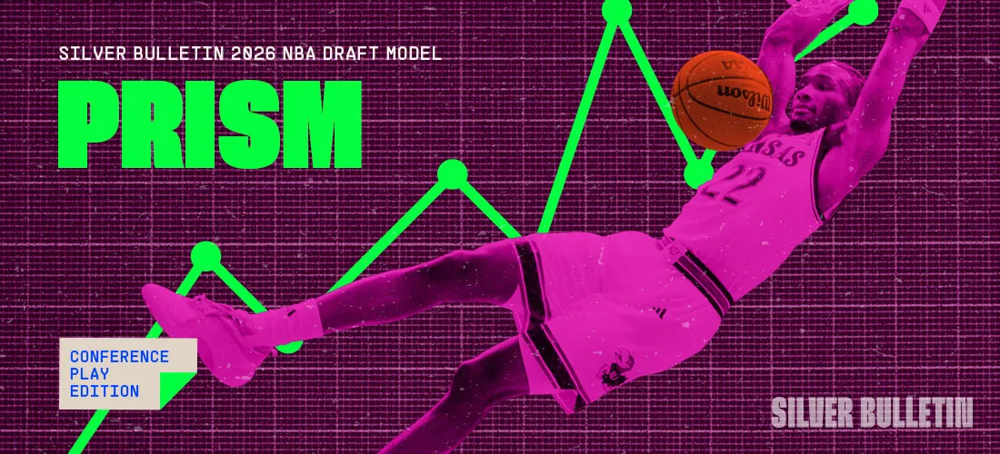

Projects and Writing
Selected Projects:

PRISM: Prospect Role Identification & Scouting Model
Basketball Analytics · Multi-Stage Predictive System
Multi-stage draft projection architecture trained on rolling historical cohorts to predict
5-year professional impact (EPM-based) and rotation probability. Integrates role-aware feature
engineering, play-type efficiency splits, contextual production normalization, and percentile-based
cross-era scaling. Uses pairwise gradient boosting for relative ranking calibration and
out-of-fold shrinkage priors to prevent information leakage. Designed to identify structural
mispricings between consensus evaluation and long-term impact outcomes.

Team Projection Model
Sports Analytics
Probabilistic forecasting system incorporating contextual adjustments,
injury simulations, and reproducible data pipelines.

Quarterback Rating Model
Performance Modeling
Play-by-play performance model incorporating context, opponent strength,
and stability adjustments over time.

Player Tracking System
Computer Vision · Spatial Modeling
Homography-based pipeline aligning broadcast footage with spatial coordinates
for advanced positional analytics.

Rebounding Impact Metric
Possession-Level Modeling
Context-adjusted rebounding metric separating team structure from
individual impact.
Selected Writing:

MVP Leap Analysis
NBA Analytics · 2025
Historical comps, shot profile changes, and context-driven modeling
to evaluate breakout probability.

Modern Roster Construction
Basketball Theory
Analysis of lineup experimentation, spacing dynamics,
and offensive rebounding investment.

Draft Evaluation Notes
Prospect Modeling
Blends film study with statistical indicators and role projections.